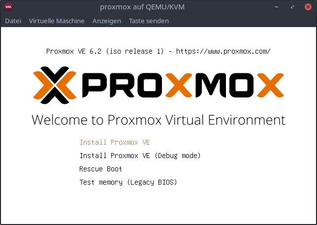
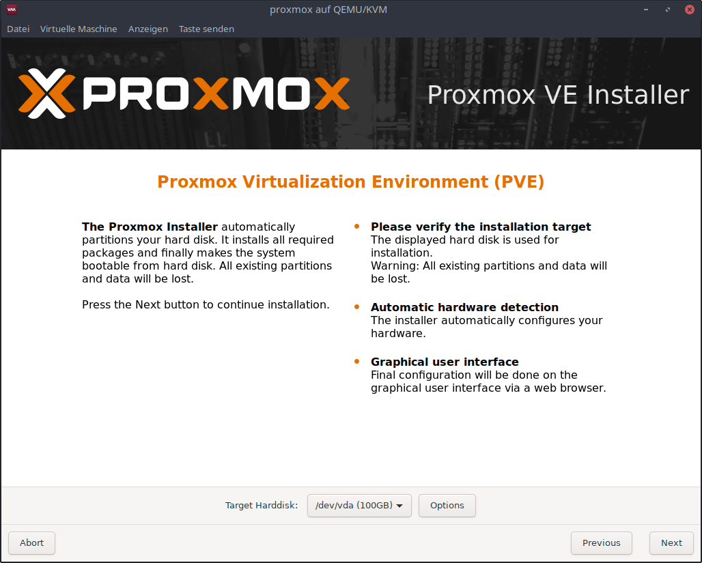
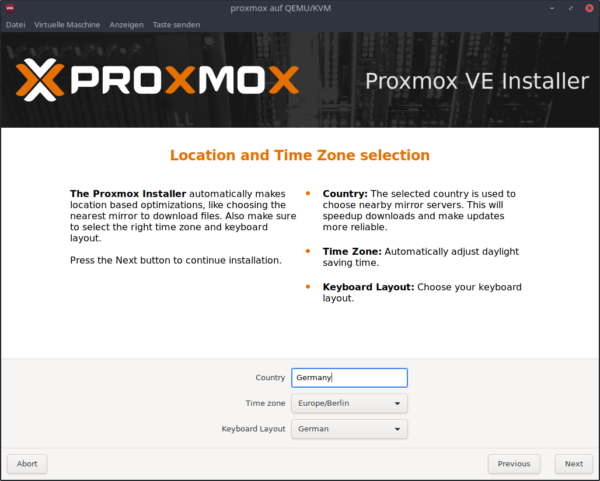
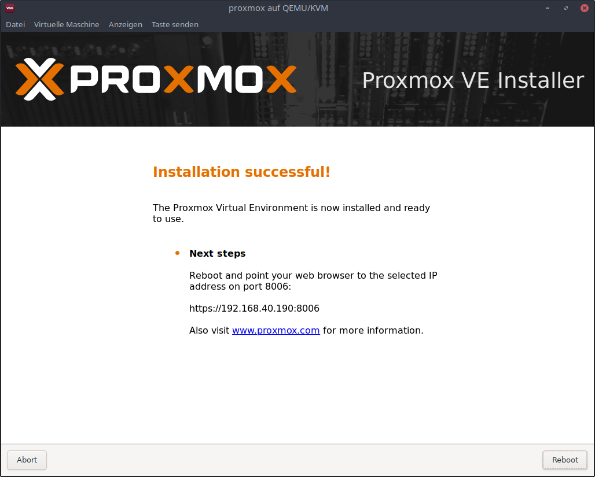
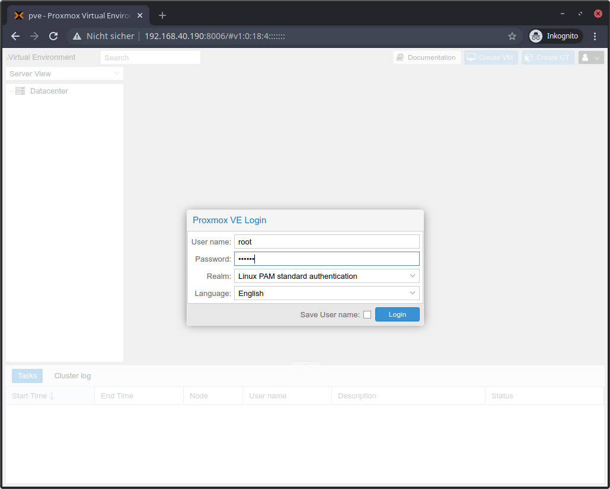

Setup Proxmox VE
Installation
Download the Proxmox VE ISO image file from here and start the installation.
Boot

Select Install Proxmox VE.
EULA

Accept the end user license agreement.
Target hard disk

Select the target hard disk.
Location and Timezone

Choose the country, timezone and keyboard layout.
Password and E-Mail Address
Choose a password, confirm it and choose an email address.
The default password in the ansible configuration is 123456.
If you choose a different password here, you have to adjust it in the
ansible configuration too.
Network configuration

Specify the network configuration. Make sure that the Proxmox VE host is in the same network as the controlserver.
This IP address must be adjusted in the ansible configuration later. More info here.
Summary

Confirm the summary to start the installation.
Reboot

Remember the IP address and port. Reboot the system.
Access the webinterface (optional)

Connect to https://<ip-address>:8006/ (here https://192.168.40.190:8006/) and accept the self signed certificate.

Log in using the user root and the password specified before.